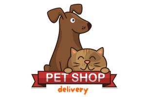

Este subtítulo tem a função de contextualizar o visitante, apresentando de forma clara o assunto principal da página. Ele ajuda tanto na experiência do usuário quanto na otimização para mecanismos de busca (SEO).
Os títulos de terceiro nível permitem dividir o conteúdo em seções menores, tornando a leitura mais fluida e agradável. Eles são ideais para separar ideias, produtos ou serviços dentro de um mesmo tema.
Neste nível, o conteúdo passa a ser mais específico. É comum utilizá-lo para explicar detalhes técnicos, diferenciais de um serviço ou informações complementares que enriquecem a experiência do leitor.
O quinto nível é indicado para observações adicionais, listas de benefícios ou explicações que aprofundam ainda mais o assunto tratado no nível anterior.
Este é o nível mais baixo da hierarquia de títulos. Geralmente é utilizado para notas, observações finais ou pequenos destaques dentro de um tópico específico.
Na Pet Shop Delivery, selecionamos cada item com extremo cuidado, sempre pensando no conforto, na saúde e, claro, na diversão dos pets que fazem parte da sua família. Acreditamos que cães e gatos merecem produtos de qualidade, seguros e desenvolvidos com responsabilidade.
Trabalhamos diariamente para oferecer uma experiência completa, desde a escolha dos fornecedores até o momento em que o pedido chega à sua casa. Nosso objetivo é facilitar a rotina dos tutores e garantir mais bem-estar para os animais.
Da ração super premium, elaborada com ingredientes selecionados, vitaminas e minerais essenciais, até os acessórios que unem conforto e estilo, entregamos cuidado, carinho e dedicação em cada detalhe.
Além disso, nossos brinquedos são pensados para estimular o desenvolvimento físico e mental dos pets, ajudando a reduzir o estresse e promovendo momentos de diversão saudável.
Curadoria Especializada: Todos os produtos disponíveis em nossa loja passam por uma seleção rigorosa. Trabalhamos apenas com marcas reconhecidas no mercado e aprovadas por veterinários, garantindo segurança e qualidade.
Entrega Relâmpago: Sabemos que imprevistos acontecem. Por isso, nossa logística é eficiente e preparada para realizar entregas rápidas, evitando que seu pet fique sem alimento ou sem aquele brinquedo tão esperado.
Variedade de Produtos: Contamos com uma ampla linha de rações, petiscos, medicamentos, brinquedos, caminhas e produtos de higiene, tudo em um único lugar para sua comodidade.
Atendimento Humanizado: Nossa equipe é formada por pais e mães de pet, pessoas que entendem o amor e a responsabilidade de cuidar de um animal. Estamos sempre prontos para orientar, tirar dúvidas e ajudar você a fazer a melhor escolha.
Ao escolher a Pet Shop Delivery, você não está apenas comprando produtos, mas investindo em qualidade de vida, saúde e felicidade para o seu pet.